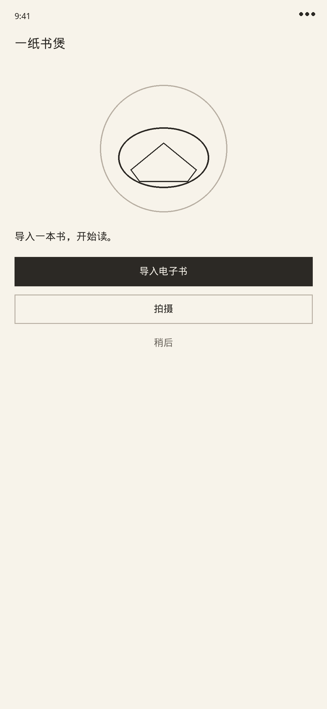
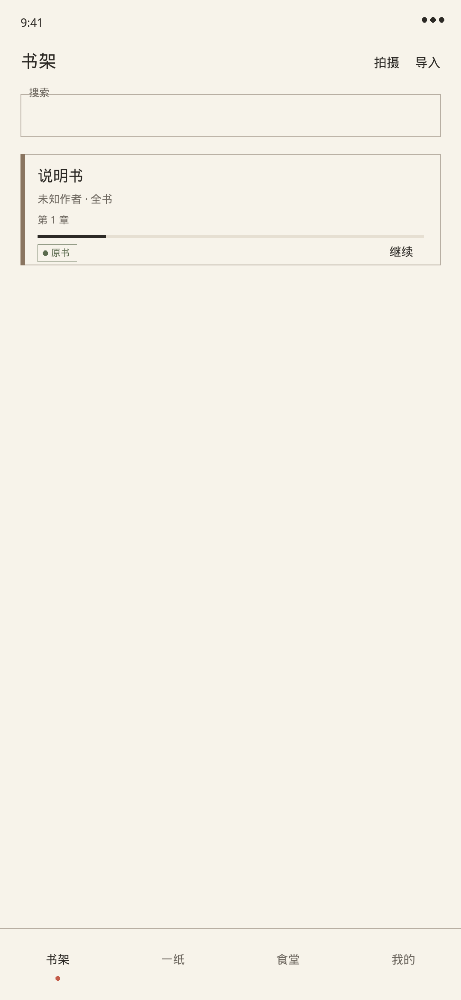
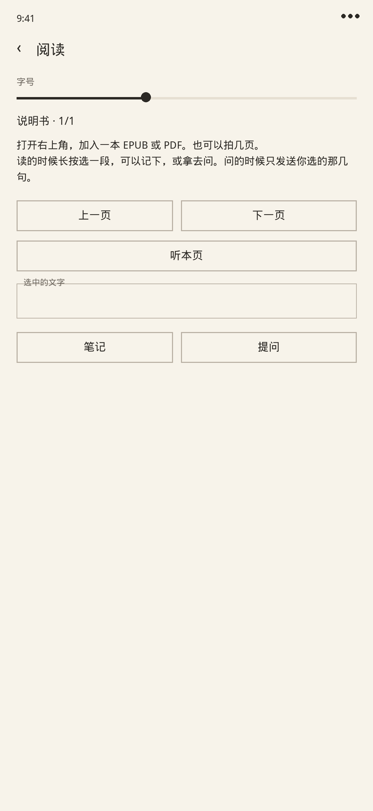
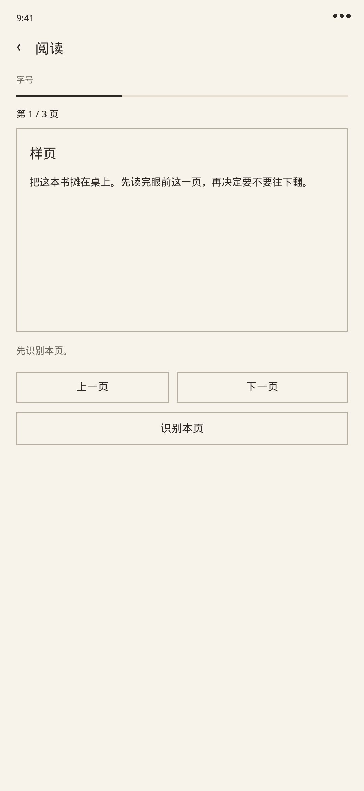
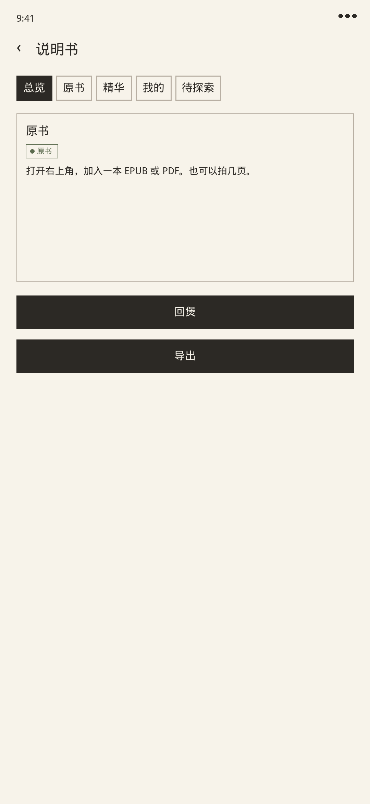
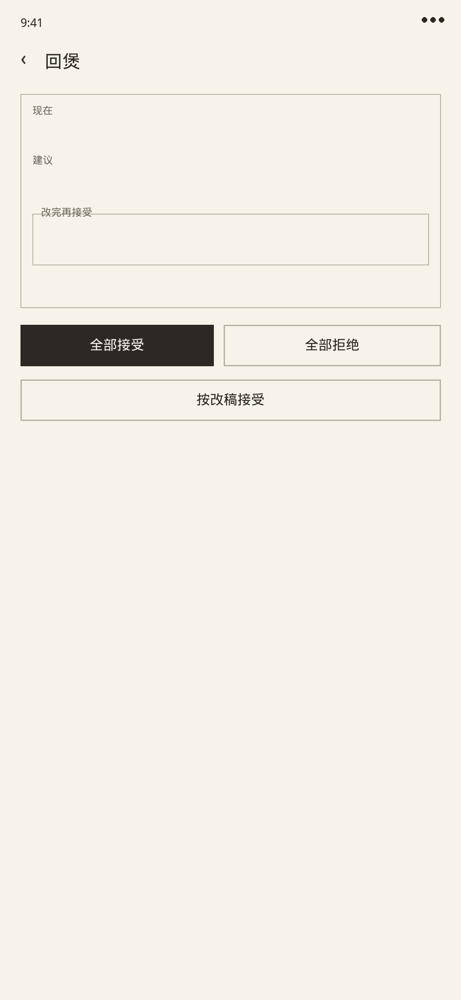
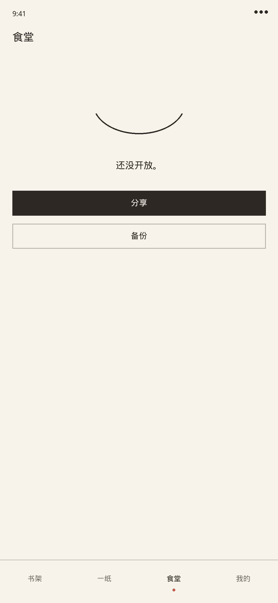
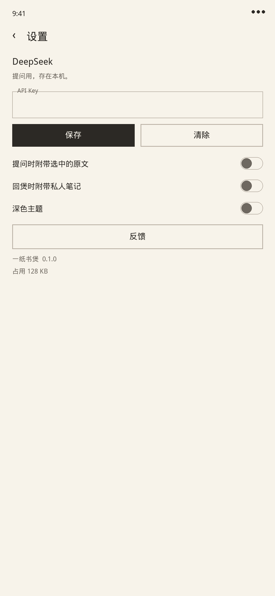

书房
导入 EPUB、PDF、图片或文本。加密的书加不进来。
书架、一纸、食堂、我的。








书在这台手机上。提问用你自己的 Key。
导入 EPUB、PDF、图片或文本。加密的书加不进来。
拍照或从相册选页，裁切后放进书架。
划一段可以记下，或拿去问。引用能回到原处。
每本书一张一纸。回煲按条看。导出默认不含私人笔记。
今天该回头看的划线，会出现在一纸页。
导出 zip，换机可以恢复。也可以传到自己的网盘。
用 Chrome 打开本页，点下载。这是试用 debug 包。
1. 点「下载 Android 安装包」。
2. 允许这个来源安装，打开文件。
3. 重装会清书房，先到「我的」导出备份。
试用包
不用登录。阅读、笔记、导出都在这台手机上。
包名 com.onepaper.app · SHA256 893d189354f4bc9eb0f01fd6124d81ce5287dd735865efb25cc37054c4b01a60